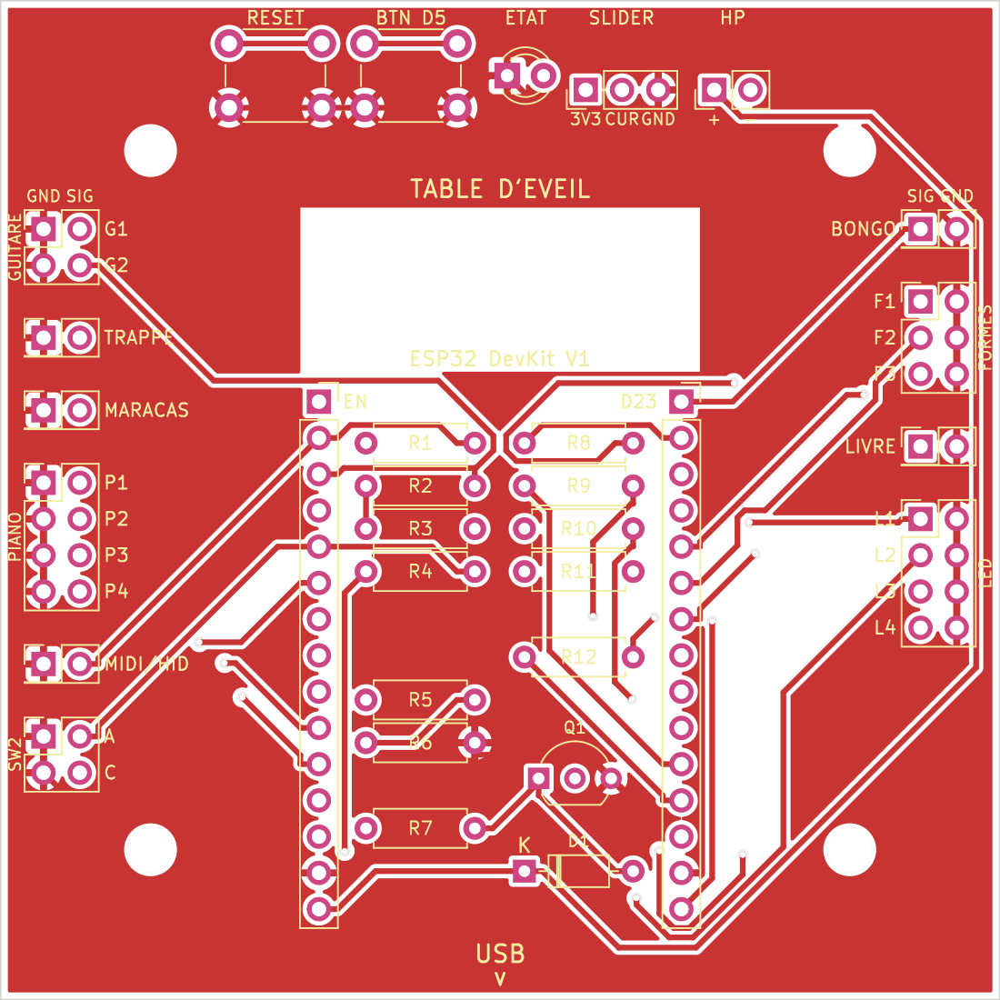
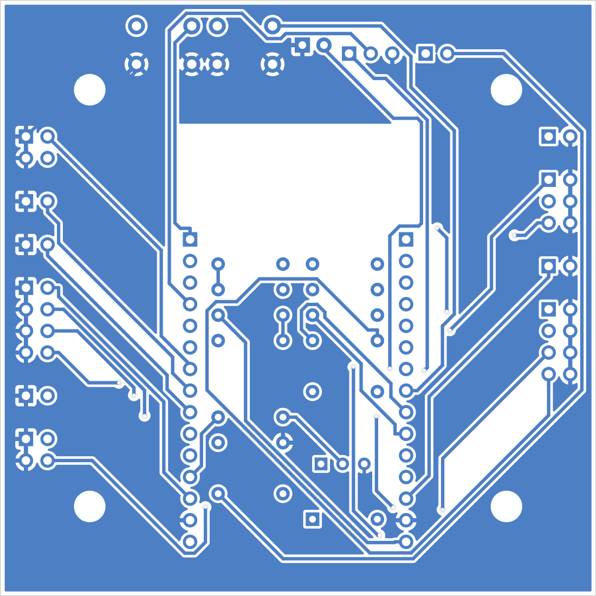

Table d'éveil · circuit imprimé v1
Une carte de 70 × 70 mm qui remplace la plaque à trous. Le DevKit s'enfiche dessus, chaque zone de la table a son connecteur avec sa masse, et les LED, le haut-parleur, un bouton libre, un bouton reset et une LED d'état sont intégrés. Plus aucun fil à souder sur l'ESP32.


Une carte avec la puce ESP32 nue demanderait d'ajouter le port USB, la puce de programmation, le régulateur 3,3 V et le circuit de démarrage, de souder des composants de 1 mm, et de respecter les règles de l'antenne. C'est un projet à part entière. Ici le DevKit reste enfiché sur deux barrettes femelles : il se programme comme avant, et s'il grille, il se remplace en dix secondes.
Même chose pour les connecteurs : les embouts de tes fils sont des pins mâles de breadboard, donc la carte reçoit des barrettes femelles au pas de 2,54 mm. Tu branches tes fils tels quels.
Chaque signal a sa broche de masse juste à côté, sur la rangée marquée GND. Un bouton se branche donc toujours sur deux broches voisines, sans se demander où trouver la masse.
| Connecteur | Marquage | GPIO | Remarque |
|---|---|---|---|
| Guitare | G1 · G2 | 33 · 39 | 10 kΩ déjà sur la carte pour la 39 |
| Trappe | TRAPPE | 25 | |
| Maracas | MARACAS | 26 | |
| Piano | P1 – P4 | 13 · 14 · 27 · 32 | le fil commun va sur n'importe quelle broche GND du bloc |
| SW1 mode MIDI / HID | MIDI/HID | 36 (VP) | change : était 22 |
| SW2 3 positions | A · C | 35 | change : une seule broche, le commun sur GND |
| Connecteur | Marquage | GPIO | Remarque |
|---|---|---|---|
| Bongo | BONGO | 23 | |
| Formes | F1 – F3 | 18 · 19 · 21 | |
| Livre | LIVRE | 15 | |
| 4 LED de la table | L1 – L4 | 22 · 4 · 16 · 17 | change : L1 était sur 2. Résistances sur la carte, anode sur L, cathode sur GND |
| Élément | Marquage | GPIO | Remarque |
|---|---|---|---|
| Slider | 3V3 · CUR · GND | 34 | inchangé |
| Haut-parleur | HP + − | 12 | piloté par un transistor, alimenté en 5 V |
| Bouton libre | BTN D5 | 5 | nouveau, usage à définir dans le firmware |
| LED d'état | ETAT | 2 | nouveau, s'allume en même temps que la LED bleue du DevKit |
| Reset | RESET | EN | nouveau, redémarre l'ESP32 |
Les 23 broches utilisables étaient prises. Le switch 3 positions occupait deux broches ; il n'en prend plus qu'une, lue en analogique. Avec le levier sur A la broche lit 0 V, sur C une résistance donne 1,65 V, au centre elle reste à 3,3 V. Cette broche libérée accueille SW1, qui libère à son tour D22 pour la LED 1, ce qui laisse D2 à la LED d'état. Le bouton libre prend D5, la dernière broche disponible. Le budget est maintenant de 23 sur 23.
table_eveil_gerbers.zip que je t'ai envoyé. Il est aussi dans le dépôt, dossier pcb/fab/.Si tu préfères un fabricant européen, Aisler (Allemagne) accepte le même zip. C'est plus cher, mais plus rapide et sans frais de douane.
Si une mesure diffère, dis-le-moi : chaque valeur est un seul paramètre dans le script, la carte se régénère en une minute.
| Repère | Composant | Qté |
|---|---|---|
| U1A U1B | Barrette femelle 1 × 15, pas 2,54 mm, pour le DevKit | 2 |
| J1 – J10 | Barrette femelle 2 rangées, pas 2,54 mm : 2 × 4 (×2), 2 × 3, 2 × 2 (×2), 2 × 1 (×5). Une barrette 2 × 40 sécable suffit. | 1 |
| J11 J12 | Barrette femelle 1 rangée : 1 × 3 et 1 × 2 | 1 |
| R1 – R4, R6 | Résistance 10 kΩ ¼ W | 5 |
| R5, R12 | Résistance 1 kΩ ¼ W | 2 |
| R8 – R11 | Résistance 220 Ω ¼ W | 4 |
| R7 | Résistance 47 Ω ½ W | 1 |
| Q1 | Transistor BC337 (pas un 2N2222 : les pattes sont dans l'autre ordre) | 1 |
| D1 | Diode 1N4148 | 1 |
| D2 | LED 3 mm, la couleur que tu veux | 1 |
| SW1 SW2 | Bouton poussoir 6 × 6 mm traversant | 2 |
| H1 – H4 | Vis M3 et entretoises de 5 mm environ | 4 |
Un assortiment de résistances et un lot de barrettes couvrent presque tout. Le haut-parleur se branche sur HP : un modèle 8 Ω de 0,5 W convient, celui de la table d'origine aussi.
Du plus bas au plus haut, pour que la carte tienne à plat pendant que tu soudes.
// ---- brochage carte support v1 ---- const uint8_t NB_BOUTONS = 13; const uint8_t PIN_BOUTON[NB_BOUTONS] = { 13, 14, 27, 32, // 0-3 piano 18, 19, 21, // 4-6 formes 26, 25, 23, // 7-9 maracas, trappe, bongo 33, 39, // 10-11 guitare (39 : pull-up sur la carte) 15 // 12 livre }; const uint8_t PIN_SW1 = 36; // VP, pull-up sur la carte, INPUT const uint8_t PIN_SW2 = 35; // lecture analogique, voir lireLayer() const uint8_t PIN_SLIDER = 34; const uint8_t PIN_BTN = 5; // bouton libre, INPUT_PULLUP const uint8_t PIN_LED_ETAT = 2; const uint8_t PIN_LED[4] = {22, 4, 16, 17}; const uint8_t PIN_HP = 12; // PWM : tone() ou ledcWriteTone() // A = 0 V, C = 1,65 V, centre = 3,3 V uint8_t lireLayer() { int v = analogRead(PIN_SW2); // 0..4095 if (v < 1000) return 0; // A if (v < 3000) return 2; // C return 1; // centre } void initBroches() { for (uint8_t i = 0; i < NB_BOUTONS; i++) pinMode(PIN_BOUTON[i], PIN_BOUTON[i] >= 34 ? INPUT : INPUT_PULLUP); pinMode(PIN_SW1, INPUT); pinMode(PIN_BTN, INPUT_PULLUP); pinMode(PIN_LED_ETAT, OUTPUT); for (uint8_t i = 0; i < 4; i++) pinMode(PIN_LED[i], OUTPUT); }
Une broche de l'ESP32 ne fournit que quelques dizaines de milliampères. Le transistor Q1 prend le courant directement sur le 5 V de l'USB, la résistance de 47 Ω le limite à une centaine de milliampères, et la diode absorbe le retour de la bobine. Le firmware envoie simplement une note en PWM sur la broche 12. Une résistance de 10 kΩ garde cette broche à l'état bas au démarrage, comme l'exige l'ESP32.